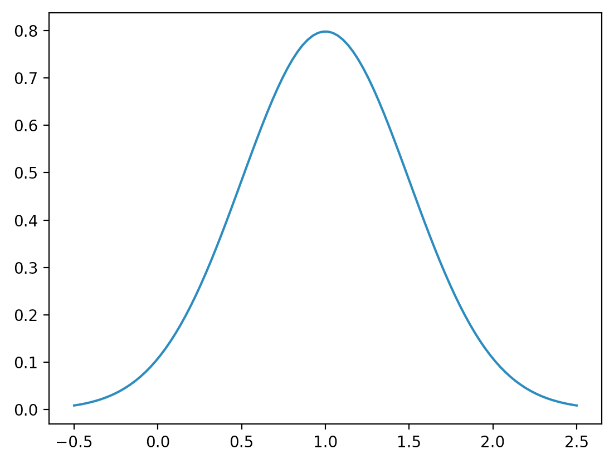
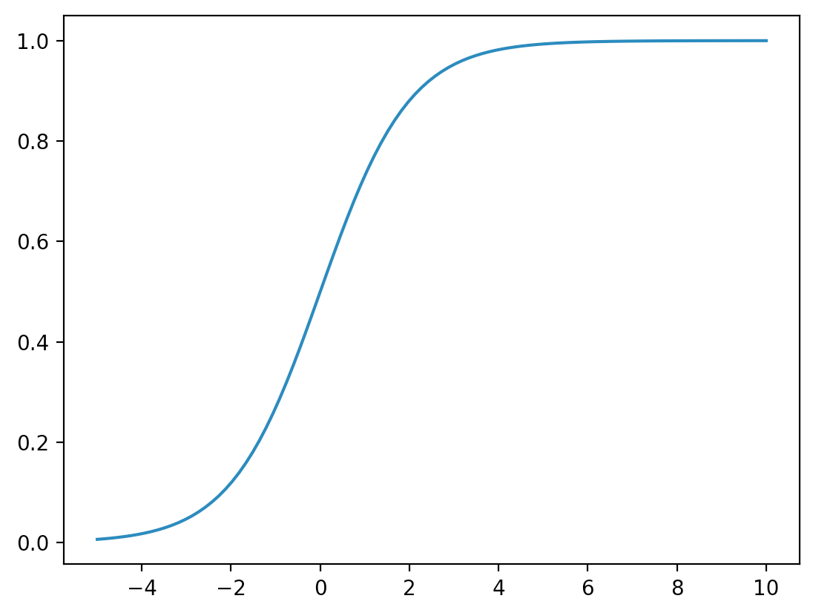

Near the begining of the enlightenment, Thomas Hobbes and John Locke amongst others were studying why humans do what they do. In order gain some freedom from the church, and thus to allow studying without simply invoking biblical truth, they hypothesized a "State of Nature". While the conceptitions of the State of Nature varied, common themes were
Hobbes famously supposed that in such an environment, life would be "nasty, brutish and short." Locke on the otherhand took a softer approach. He supposed that property was the source of conflict and that in the State of Nature, humans would essentially ignore each other.
In order to investigate further I created a simulation where humans would be modeled with three basic attributes: Strength, Health, and Aggression. Where I sampled initial strength from the uniform distrubution on 0 to 2 [written U(0, 2)], health from the normal distrubution with mean 1 and standard deviation 1/2 [written N(1, 1/2)], and aggression from U(0, 1). What this means is that strength is just as likely to be any number from 0 to 2 as any other and the same for agression on 0 to 1. Finally initial health is pulled from a bell curve with its peak at 1, looking like:
note that the center of the curve is at health=1. From here I sample a population of 2000 individuals and simulate encounters. The idea is that if the aggression of either individual is above a certain threshold, a fight will occur. Otherwise nothing will happen. This way I can sample I1, an individual from the population of individuals with an aggression above the threshold, and I2 an individual from the general population. This way a fight will alway occur, and I will not waste time simulating peaceful interactions where nothing happens.
To determine the winner of a fight, I tried a couple different models. The main idea of all of them is: get the respective strengths of I1 and I2, introduce some noise into those numbers so that both parties have a chance, and then have the individual with the higher noisy strength win. The winner gets a permanate boost in strength and the loser loses health. To prevent strength from growing in an unbounded manner, I use the sigmoid of the strength.
where sigma(x) is:
The idea is that initially increases in strength should have a large effect, but further increases should have diminishing returns in terms of percieved strength. Additionally, if health drops below zero, that individual is removed, and a new individual is added with the same inital stats as a member of the surviving population had. For better specifics, read the simulation code here.
I tried a several different variations on the above parameters and here are some results. Below is the population histogram of agression over time.
Because of the random nature of the process, I get varying results. In one case I ended up with a race of peaceful super stong individuals. In many the agressives kill everyone. The whole thing is far too sensitive to my choices of parameters to get really meaningful results from it. The big take home is that, from a super simplified prespective, Locke's model does work in some cases. A result that I found quite surprizing.
Creatures don't have finite life-spans, so high strength individuals might stick around forever. This is largely countered by the saturation of the sigmoid function and the chance involved with fights which means that nobody can end up with no risk of death.
I poorly explored the parameter space. I should modivate the parameters I chose with biology or physics and systematically vary the others to measure the sensitivity of the model to its parameters.
Adapt a simple decision system to the individuals so they can choose who to fight. Only fight scrawny looking creatures, etc. Possibly add a mechanism by which tribes could emerge e.g. only attack things that don't do a certain signal or have some attribute.